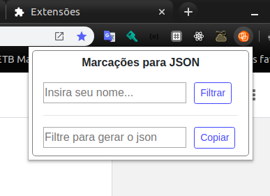
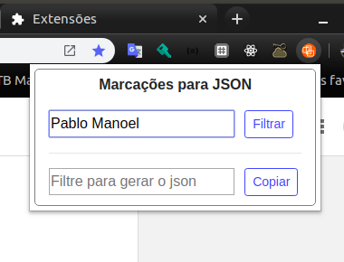
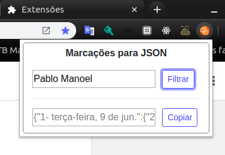
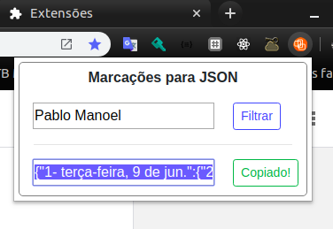
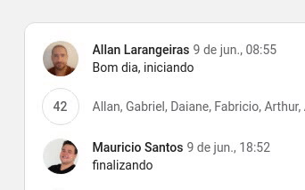

Como utilizar o Ponto-Mobicare?
- Acesse o Google chat;
- Acesse a sala que é feita a marcação dos pontos;
- Clique com botão esquerdo no mouse no ícone da extensão, no canto superior direito do seu navegador; 
- Insira seu nome na primeira caixa de entrada; 
- Clique no botão 'Filtrar' para gerar o json das suas marcações; 
- Clique no botão 'Copiar' para copiar o json gerado para sua área de transferência; 
Você também pode formatar o json gerado atraves do site jsonformatter.org .
Notas da versão
- O script percorre todas as mensagens da sala que foram renderizadas na tela
- As mensagens que estão comprimidas no botão de agrupamento do chat não são consideradas;
- Para registrar o conteúdo agrupado é necessário clicar no botão para expandir as mensagens;
- Para capturar mensagens mais antigas é necessário subir o histórico do chat até a data desejada;
- Todas as mensagens do usuário selecionado são registradas pois não há um padrão de marcação.
